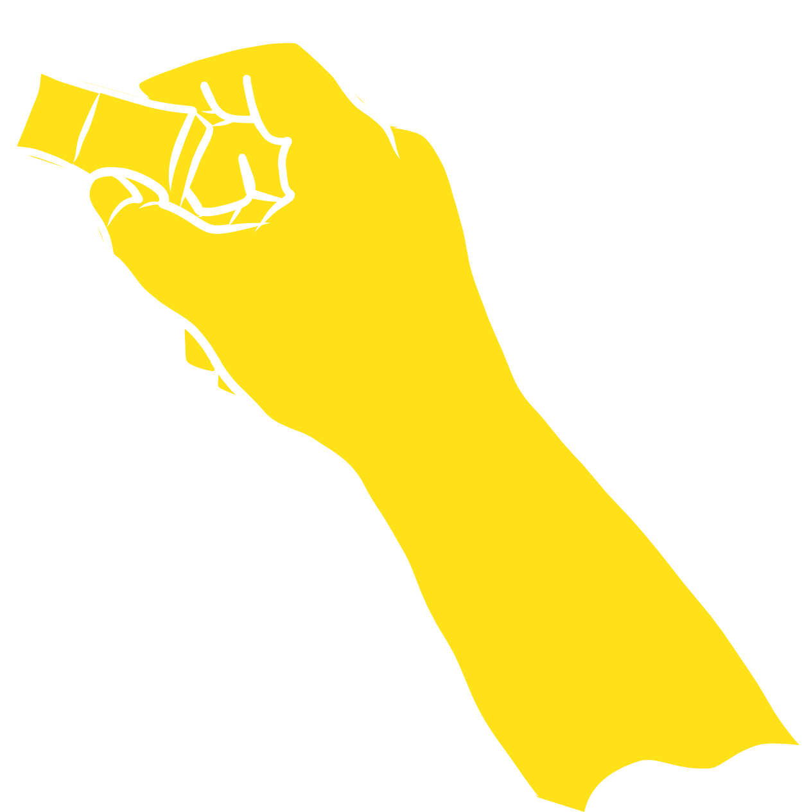

<link rel="import" href="../bower_components/polymer/polymer-element.html">

<dom-module id="character-transition">
  <template>
    <style>
      :host {
        display: block;
        position: absolute;
        z-index: 2;
        pointer-events: none;
      }
      :host > div {
        opacity:0;
        position: absolute;
        width: 100%;
        height: 100%;
      }
      svg {
        position: absolute;
        width: 100%;
        height: 100%;
        top: 0;
        left:0;
      }
      #eraser img {
        position: absolute;
        bottom: -11em;
        right: -11em;
        z-index: 10;
        width: 16.7em;
      }
      #eraser svg {
        width: 120%;
        height: 120%;
        top: -10%;
        left: -10%;
      }

      #hand-push svg {
        right: -40%;
        left: auto;
        bottom: 1em;
        width: 80%;
        transform: rotate(-60deg);
      }
      #hand-end {
        visibility: hidden;
      }

      #hand-drawing-dust {
        width: 200%;
        height: 200%;
        top: -50%;
        left: -50%;
      }
      #hand-drawing-drawing {
        width: 180%;
        height: 180%;
        /*left: 10%;*/
      }
      #hand-drawing-path {
        visibility: hidden;
      }
    </style>

    <div id="eraser">
      <svg xmlns="http://www.w3.org/2000/svg" viewBox="0 0 510 449"><path fill="none" fill-rule="nonzero" stroke="#FFE11A" stroke-width="60" d="M475 415l-68 4 72-35-183 35 173-74-268 70 278-119L79 419l390-182L36 384c284.998-135.393 431.332-207.727 439-217 11.503-13.91-396.96 178.925-396 165 .64-9.283 133.974-83.616 400-223L31 317 479 47 36 262 423 36 31 205 327 36 31 157 245 31 31 109l120-78L31 62l54-31" stroke-linecap="round" stroke-linejoin="round"/></svg>
      
    </div>

    <div id="hand-push">
      <svg xmlns="http://www.w3.org/2000/svg" viewBox="0 0 1796 1451" fill="#FFE11A" fill-rule="evenodd" stroke-linecap="round" stroke-linejoin="round" stroke="#fff" stroke-width="13"><path id="hand-end" d="M1705 768c-128.27-23.6-237.28-37.5-334.07-45.26-157.5-12.64-282.68-9.08-405.93-4.74-199 7-273-99-326-112-307-89-448-203-473-268-6.03-15.7-23-66 31-101 7 0 27-18 69-5.72 33 8.72 115.7 83.6 202 98.72 39.3 6.88 94.36.62 171 8 54.8 5.28 159.48 17.94 314 38-153.88-20.6-258.55-33.28-314-38-123.15-10.48-140 0-171-8-100-21-148.42-82.2-202-98.72-34-11.28-68.5 5.87-69 5.72-99.3-30.7-163.25-70.5-182-108C-12.04 74.92 31.76-8.84 89 10c127.3 41.9 335.67 106.94 563.9 161.94 199.14 48 413.4 88.34 602.1 99.06 223.3 44.8 342 44 469 67 86.25 74.9 92.42 450.5-19 430z"/><path id="hand-start" d="M1705 768c-128.27-23.6-307.2-72.66-333-18-34 72-66 100-159 202s-262.24 127-315.24 114C850 1108 755 1196 639 1222c-22.57 5.06-34 4-60 0 7 0-70-27-76-63s-18-97 149.9-155C686.77 992.3 812 868 866 810s18-73 80-120c-52 31-40 82-80 120-64 71-155 157-213.1 194C528 1047 487 1096 503 1159c4 28 60 55 76 63-50 68-136.34 205.86-178 229-45 25-125-34-93-99 130.42-264.9 397.73-574.28 558-710 111-94 218-228 494-339 180 20 237 12 364 35 86.25 74.9 92.42 450.5-19 430z"/></svg>
    </div>

    <div id="hand-drawing">
      <svg id="hand-drawing-dust" xmlns="http://www.w3.org/2000/svg" viewBox="0 0 1252 1031"><g fill="#FFF" fill-rule="evenodd" opacity=".8"><path d="M507.3 756.3C557.53 733.44 592 686.36 592 632c0-76.77-68.72-139-153.5-139S285 555.23 285 632c0 .98 0 1.96.03 2.94-8.84-1.92-18.06-2.94-27.53-2.94-67.1 0-121.5 51.04-121.5 114s54.4 114 121.5 114c15.87 0 31.03-2.85 44.93-8.05C323.7 877.75 362.35 895 406.5 895c67.1 0 121.5-39.85 121.5-89 0-18.4-7.63-35.5-20.7-49.7z"/><path d="M219.88 295.52c-2.3 8.56-3.74 17.5-4.23 26.76-3.5 67.02 44.6 124 107.5 127.3 62.86 3.3 116.68-48.35 120.2-115.36.5-9.46-.05-18.72-1.5-27.65.97.07 1.95.13 2.93.18 76.66 4.02 142.4-61.35 146.84-146C596.06 76.07 537.52 4.18 460.85.17c-54.3-2.85-103.1 29.1-128.56 78.08-13.5-13.8-30.2-22.3-48.6-23.28-39.5-2.07-74.8 31.3-88.9 79.3-41.6 10.42-71.8 41.77-71.8 78.84 0 44.2 42.9 80.3 96.8 82.4z"/><path d="M866.1 503.15C821.32 524 791 564.25 791 610.5c0 67.65 64.92 122.5 145 122.5 43.28 0 82.13-16.02 108.7-41.42 73.6-12.36 129.3-70.6 129.3-140.58 0-78.98-70.96-143-158.5-143-68.94 0-127.6 39.7-149.4 95.15z"/><path d="M776.7 293.56C785.45 335.9 827.25 368 877.5 368c30.22 0 57.38-11.6 76.14-30.08 23.4 18.7 54.38 30.08 88.36 30.08 72.9 0 132-52.38 132-117s-59.1-117-132-117c-31.94 0-61.24 10.06-84.07 26.8C956.03 117 915.6 82 866 82c-33.3 0-62.46 15.76-78.6 39.37C771 111.83 749.07 106 725 106c-50.8 0-92 25.97-92 58s41.2 58 92 58c7.9 0 15.58-.63 22.9-1.8-5.02 7.56-7.9 16.38-7.9 25.8 0 21.66 15.22 40.16 36.7 47.56z"/><path d="M660.3 890.34C627.3 875.97 605 848.5 605 817c0-46.4 48.35-84 108-84s108 37.6 108 84c0 2.05-.1 4.1-.28 6.1C869.24 837.8 904 877.43 904 924c0 59.1-55.96 107-125 107-69.04 0-125-47.9-125-107 0-11.76 2.22-23.07 6.3-33.66z"/><path d="M88.8 74.23c1.62 9.23-.43 19.75-6.44 29C71.08 120.6 50.1 127 35.5 117.53c-5.34-3.48-9.1-8.6-11.13-14.6-4.8 1.37-10.43.6-15.26-2.55-8.3-5.4-11.2-15.8-6.4-23.22 4.9-7.4 15.5-9.03 23.9-3.62l.3.2c.8-1.64 1.7-3.24 2.7-4.8 11.3-17.38 32.2-23.78 46.8-14.3l.4.27c10-15.2 22-25 26.8-21.9 4.9 3.2.7 18.3-9.4 33.8-1.7 2.7-3.5 5.2-5.3 7.5z"/><path d="M1250.57 377.3c5.7 19.9-11.27 52.66-28 57.46-6.14 1.76-14.15 2.37-20 0-2.13 4.5-10.82-1.6-16.36 0-9.5 2.74-19.2-1.93-21.7-10.42-2.4-8.5 3.4-17.6 12.9-20.35l.3-.1c-.7-1.7-1.3-3.4-1.8-5.2-5.7-19.9-6.4-40.1 10.4-44.9.2-.1 10 0 10.1 0-4.9-17.6.8-20 6.3-21.6 5.6-1.6 9-1.6 14.1 16.2.9 3 1.6 6 2.2 8.9 8.03 4.8 28.77 9.2 31.8 19.8z"/><path d="M77.3 452.75C68.77 448.52 63 440.6 63 431.5c0-13.53 12.76-24.5 28.5-24.5s28.5 10.97 28.5 24.5v.5h.5c15.74 0 28.5 10.97 28.5 24.5S136.24 481 120.5 481h-.7c-1.73 13.5-15.08 24-31.3 24-17.4 0-31.5-12.1-31.5-27 0-11.53 8.44-21.38 20.3-25.25z"/><path d="M985.93 842.12c-9.8 8.15-22.64 10.87-33.74 5.92-16.6-7.36-23-28.9-14.5-48.14 8.5-19.22 28.9-28.84 45.4-21.48l.6.28.2-.62c8.5-19.23 28.9-28.85 45.4-21.5 16.5 7.37 23 28.92 14.4 48.15l-.4.84c15.53 9.46 21.1 31.5 12.3 51.3-9.48 21.25-31.9 31.9-50.1 23.8-14.1-6.28-21.56-21.94-19.8-38.55z"/><path d="M649,30a53,30 0 1,0 106,0a53,30 0 1,0 -106,0"/></g></svg>
      <svg id="hand-drawing-drawing" xmlns="http://www.w3.org/2000/svg" viewBox="0 0 2628 2572"><g id="Page-1" fill="none" fill-rule="evenodd"><path id="hand-drawing-path" stroke="#979797" d="M1 491.68v1322.1L93.35 688l76.48 1078.18 49.06-739c7.7-261.72 48.5-420.97 122.6-477.75 74-56.76 271.7-76 593-57.72l-593 225.2 826.8-225.2-867.2 365.2 1141.4-365.2c-683 243.44-1050 410.87-1101 502.3-50.98 91.4-50.98 348.8 0 772.17l111.12-739 46.17 739 76.47-772.2 37.58 772.2c.48-448.4 36.8-719.75 108.95-814.05 108.2-141.4 668.8-431.5 694.8-347.8 17.3 55.8-174.1 204.5-574.3 446L1659 716.9l-916.3 516.7L1659 924.7l-871.57 503.7 842.7-275.68L830 1545.34c514.2-151.08 771.28-198.7 771.28-142.9 0 83.7-858.58 264.13-879.5 363.72-13.95 66.4 84.9 93.82 296.53 82.27l75.1-181.86v181.86l75.1-181.86 40.4 147.22 79.4-220.9 59.17 173.2 95.25-138.6 31.76 138.5 126.98-173.2 28.88 220.82"/><g id="hand-drawing-hand"><path id="Rectangle" fill="#FFE11A" d="M121.75 452.95c20.1-44.87 34.6-70.22 43.5-76.04 8.94-5.8 26.53 2 52.78 23.3 14.22-5.3 21.12-6.8 20.7-4.5-.06.4-2.73-62.1 4.1-55.9 3.34 3-28.64-27.3-23.93-22 2.92 3.28-65.6 22.9-76.73 31C103.3 377.1 63 409.2 48.2 378.3c-7.6-15.9 89.05-175.4 105.78-178 40.05-6.16 225.72-30.34 252.2-7.5 52 44.8 235 394.56 282.25 452.95 55.9 69.06 221.5 370.64 250 422.6 31 56.54-258.27 168.13-271.77 109.78C611.88 941.4 620.2 937.2 611.2 914.95c-49.9-123.52-167.63-311.1-176.3-310.4-27.46 2.2-60.64-9.74-99.52-35.78-25.35-18.7-41.54-31.94-48.56-39.68-7.03-7.8-45.7-27.8-116-60.1l-49.05-16.1z"/><path id="Path-3" stroke="#FFF" stroke-width="10" d="M941.54 1071.8c-3.47-15.42-64.5-119.6-183.1-312.55-177.88-289.42-339.82-568.12-360.7-572.2-20.87-4.1-205.13-3.12-240.04 11.82-34.9 14.94-111.44 150.2-111.33 183.56 4.52 7.08 11.78 10.55 21.75 10.42" stroke-linecap="round" stroke-linejoin="round"/><path id="Path-10" stroke="#FFF" stroke-width="10" d="M117.75 364.8c24.7-25.2 39.84-41.6 45.4-49.16 5.56-7.57 9.1-18.16 10.6-31.77 41.52 33.76 65.22 51.68 71.07 53.76-3.43 8.05-6 27.97-7.65 59.74" stroke-linecap="round" stroke-linejoin="round"/><path id="Rectangle-2" fill="#FFE11A" d="M30.52 439.78L482.17 13.06c9.16-5.12 15.06-6.4 17.68-3.8 1.9 1.9 8.33 6.03 10.56 15.8.6 2.4 0 7.12-1.8 14.13L59.3 467.4c-29.05 18.36-45.18 26-48.4 22.9-3.2-3.1 3.35-19.96 19.67-50.6z"/><g id="Group-2" stroke="#FFF" stroke-width="10" stroke-linecap="round" stroke-linejoin="round"><path id="Path-5" d="M34.04 440.3l8.1 20.04 18.84 3.2"/><path id="Path-6" d="M43.57 459.75L429.74 94.07"/><path id="Path-4" d="M7.98 491.6l52.7-28.78L513.9 33.45c-.4-9.27-3.4-16.66-8.97-22.17-5.56-5.52-10.88-6.97-15.96-4.37L31.17 441.5l-23.2 50.1z"/><path id="Path-7" d="M419.5 74.9c4.3 9.33 7.86 15.38 10.67 18.16 2.8 2.78 7.6 5 14.4 6.67"/><path id="Path-8" d="M465.27 33.12c2.5 8.62 4.8 14.34 6.94 17.16 2.2 2.83 6.4 5.82 12.9 8.97"/><path id="Path-9" d="M482.77 14.4c.88 6.3 3.3 12.26 7.23 17.88 3.94 5.62 8.83 8.08 14.68 7.38"/></g><path id="Path-18" fill="#FFE11A" d="M121.25 458.4c-18.3-5.5-31.65-11.68-40.07-18.56-8.43-6.88-12.93-15.26-13.5-25.16 1.16-10.23 3.26-17.42 6.3-21.58 3.05-4.17 11.52-11.45 25.42-21.86 15-1.68 25.92-2.23 32.75-1.65 6.84.5 19.57 3.1 38.2 7.7l-49.1 81z"/><path id="Path-2" stroke="#FFF" stroke-width="10" d="M311.04 389.45l-92.33 8.92c-25.6-15.26-55.9-25.56-90.9-30.92-52.4-8.03-101.6 64.43-15 88.75 69.9 16.02 23.3-.44 123 46.33 99.7 46.77 64.7 74.92 201.2 105.77 83.5 113.6 164 245.43 176.3 332.9 5.3 37.92 24 118.6 56.1 242.04" stroke-linecap="round" stroke-linejoin="round"/><path id="Path-11" stroke="#FFF" stroke-width="10" d="M278.8 390.7c4-4.04 7.15-7.8 9.44-11.28 2.3-3.47 5.6-9.5 9.96-18.12" stroke-linecap="round" stroke-linejoin="round"/><path id="Path-12" stroke="#FFF" stroke-width="10" d="M265.1 389.2c3.5-23.13 6.37-38.74 8.57-46.82 5.7-20.98 12.75-31.54 13.22-35.36-3.9-4-6.9-11.42-9-22.22" stroke-linecap="round" stroke-linejoin="round"/><path id="Path-13" stroke="#FFF" stroke-width="10" d="M246.24 336.23l21.52-5.46" stroke-linecap="round" stroke-linejoin="round"/><path id="Path-14" stroke="#FFF" stroke-width="10" d="M237.62 299.9c9.14 12.42 15.84 20.62 20.1 24.6 4.28 3.98 10.5 8.18 18.66 12.6" stroke-linecap="round" stroke-linejoin="round"/><path id="Path-15" stroke="#FFF" stroke-width="10" d="M172.88 282.7c-5.74-8.9-9.67-15.93-11.77-21.14-2.1-5.2-4.1-13-6.2-23.37" stroke-linecap="round" stroke-linejoin="round"/><path id="Path-16" stroke="#FFF" stroke-width="10" d="M158.2 321.44c-11.95-.03-21.87-.7-29.75-2-7.9-1.32-15.44-2.94-22.65-4.88" stroke-linecap="round" stroke-linejoin="round"/><path id="Path-17" stroke="#FFF" stroke-width="10" d="M75.96 391.5c13.12-14.13 46.63-12.1 58.2.04-10.24 11.7-23.75 33.15-16.77 57.24-17.5 2.02-34.7-9.56-42.2-15.8-7.5-6.2-12.5-27.35.7-41.48z" stroke-linecap="round" stroke-linejoin="round"/></g></g></svg>
    </div>
  </template>

  <script>
    /**
     * @customElement
     * @polymer
     */
    class CharacterTransition extends Polymer.Element {
      static get is() {
        return "character-transition";
      }

      static get properties() {
        return {
          canvas: {
            type: Object,
            observer: '_setCanvasBorders'
          },
          timeline: {
            type: Object,
            value: function () {
              return {};
            }
          }
        };
      }

      _setCanvasBorders(canvas) {
        if (canvas && Object.keys(canvas).length > 0) {
          const rect = canvas.getBoundingClientRect();
          this.style.setProperty('width', `${rect.width}px`);
          this.style.setProperty('height', `${rect.height}px`);
          this.style.setProperty('top', `${rect.top}px`);
          this.style.setProperty('left', `${rect.left}px`);
        }
      }

//      runAnimation(type) {
//        let transition;
//        type = type||'';
//        switch(type) {
//          case "fromHome":
//            transition = this.erase();
//            break;
//          case "handDrawing":
//            transition = this.handDrawing();
//            break;
//          default:
//            transition = this.handPush();
//            break;
//        }
//        return transition;
//      }

//      resetAnimation() {
//        if (this.timeline) {
//
//          const pusher = this.shadowRoot.querySelector('#hand-push svg');
//          pusher.style.removeProperty('transform');
//
//          const start = this.shadowRoot.getElementById('hand-start');
//          start.removeAttribute('style');
//
//
//          const divs = this.shadowRoot.querySelectorAll('div');
//          for(let i = 0, l = divs.length; i<l; ++i) {
//            let el = divs[i];
//            if(parseInt(el.style.getPropertyValue('opacity'), 10)) {
//              el.style.opacity = '';
//            }
//          }
//
//          this.style.setProperty('opacity', "1");
//        }
//      }

//      exitTransition(t) {
//        t = t || '';
//        let tl;
//
//        // All of the styles here should be reset in resetAnimation()
//        switch(t) {
//          case 'handPush':
////            tl = new TimelineLite({
////              onComplete: () => {
////                this.resetHandPush();
////              }
////            });
////            const style = this.shadowRoot.getElementById('hand-push');
////            const pusher = style.querySelector('svg');
////            const start = this.shadowRoot.getElementById('hand-start');
////
////            tl
////              .to(start, .3, {morphSVG:{shape:start, shapeIndex:0}, ease:Power2.easeOut})
////              .to(pusher, .3, {y: "-150%"}, "-=.3");
//            break;
//          case 'handDrawing':
////            tl = new TimelineLite({
////              onComplete: () => {
////                this.resetHandDrawing();
////              }
////            });
//            break;
//          default:
//            tl = new TimelineLite({
//              onComplete: () => {
//                this.resetErase();
//              }
//            });
//            tl.to(this, .3, {opacity:0});
//            break;
//        }
//
//        return tl;
//      }

      eraseExit() {
        const transitionStyle = this.shadowRoot.getElementById('eraser');
        let tl = new TimelineLite({
          onComplete: () => {
            this.resetErase();
          }
        });

        tl.to(transitionStyle, .3, {autoAlpha:0});

        return tl;
      }

      erase() {
        const transitionStyle = this.shadowRoot.getElementById('eraser');

        if(Polymer.Path.get(this, 'timeline.erase')) {
          this.timeline.erase.seek(0);
          transitionStyle.style.setProperty('opacity', 1);
          return this.timeline.erase;
        }

        const eraser = transitionStyle.querySelector('svg');
        const hand = transitionStyle.querySelector('img');
        const path = eraser.querySelector('path');
        const offsetX = -1 * (hand.getBoundingClientRect().left - this.canvas.offsetLeft);
        const offsetY = -1 * (hand.getBoundingClientRect().top - this.canvas.offsetTop);
        let genericTl = new TimelineLite();
        let handTl = new TimelineMax({
          yoyo: true,
          repeat: 24
        });
        let tl = new TimelineMax();

        genericTl
          .from(hand, 0.5, {x: "100%", y: "100%", ease: Circ.easeInOut})
          .to(hand, 0.3, {rotation: "-45deg", ease: Circ.easeInOut}, "-=0.2")
          .to(hand, 3, {x: offsetX, y: offsetY,  ease: Power1.easeInOut})
          .from(path, 3, {drawSVG: "0%", ease: Power1.easeInOut}, "-=2.9");

        handTl.to(hand, 0.12, {rotation: "+=90",  ease: Power1.easeInOut, transformOrigin:"90% 95%"});

        transitionStyle.style.setProperty('opacity', 1);

        tl
          .set(transitionStyle, {autoAlpha: 1})
          .add(genericTl, "generic")
          .add(handTl, "-=3");

        Polymer.Path.set(this, 'timeline.erase', tl);

        return tl;
      }

      handPushExit() {
        let tl = new TimelineLite({
          onComplete: () => {
            this.resetHandPush();
          }
        });
        const style = this.shadowRoot.getElementById('hand-push');
        const pusher = style.querySelector('svg');
        const start = this.shadowRoot.getElementById('hand-start');

        tl
          .to(start, .3, {morphSVG:{shape:start, shapeIndex:0}, ease:Power2.easeOut})
          .to(pusher, .3, {y: "-150%"}, "-=.3");

        return tl;
      }

      handPush() {
        const transitionStyle = this.shadowRoot.getElementById('hand-push');

        if(Polymer.Path.get(this, 'timeline.handPush')) {
          this.timeline.handPush.seek(0);
          transitionStyle.style.setProperty('opacity', 1);
          return this.timeline.handPush;
        }

        let tl = new TimelineLite();
        const pusher = transitionStyle.querySelector('svg');
        const start = this.shadowRoot.getElementById('hand-start');
        const end = this.shadowRoot.getElementById('hand-end');

        tl
          .set(transitionStyle, {autoAlpha: 1})
          .from(pusher, .5, {y: "-150%"})
          .to(start, .3, {morphSVG:{shape:end, shapeIndex:0}, ease:Back.easeOut.config(2)}, "+=.5");

        Polymer.Path.set(this, 'timeline.handPush', tl);
        return tl;
      }

      handDrawingExit() {
        console.log('handDrawingExit transition');
        const drawingHand = this.shadowRoot.getElementById('hand-drawing-hand');
        let tl = new TimelineLite({
          onComplete: () => {
            this.resetHandDrawing();
          }
        });
        tl.to(drawingHand, .5, {autoAlpha: 0});
        return tl;
      }

      handDrawing() {
        console.log('handDrawing transition');
        const transitionStyle = this.shadowRoot.getElementById('hand-drawing');
        const dust = this.shadowRoot.getElementById('hand-drawing-dust');
        const dustParticles = dust.querySelectorAll('path');
        const drawingHand = this.shadowRoot.getElementById('hand-drawing-hand');
        const drawingPathEl = this.shadowRoot.getElementById('hand-drawing-path');
        const drawingPath = MorphSVGPlugin.pathDataToBezier(drawingPathEl, {relative:true});


        if(Polymer.Path.get(this, 'timeline.handDrawing')) {
          this.timeline.handDrawing.seek(0);
          transitionStyle.style.setProperty('opacity', 1);
          return this.timeline.handDrawing;
        }

        let tl = new TimelineLite();


        // Dust animation

        let dustTimeline = new TimelineLite();
        const startX = 626; // center of the SVG
        const startY = 516; // center of the SVG

        for(let i=0, l = dustParticles.length; i<l; ++i) {
          const particle = dustParticles[i];
          const data = particle.getBBox();
          let nested = new TimelineLite();
          const durationTranslate = (Math.random() + 0.5) * 3;
          nested
            .from(particle, 2, {autoAlpha: 0})
            .fromTo(particle, 1.5, {scale: 0, transformOrigin: "50% 50%", ease:Power0.easeNone}, {scale: 1.2, transformOrigin: "50% 50%", ease:Power0.easeNone}, "-=2")
            .fromTo(particle, 4, {scale: 1.2, transformOrigin: "50% 50%", ease:Power0.easeNone}, {scale: 0, transformOrigin: "50% 50%", ease:Power0.easeNone})
            .from(particle, durationTranslate, {
              x:startX - data.x - (data.width/2),
              y:startY - data.y - (data.height/2),
              ease: Power4.easeOut},"-=4.5")
            .to(particle, 2, {autoAlpha: 0}, "3.5");
          dustTimeline.add(nested, 0);
        }

        // Drawing animation
        let drawingTimeline = new TimelineLite();
        drawingTimeline.to(drawingHand, 3, {bezier:{values:drawingPath, type:"cubic"}, ease:Linear.easeNone});


        tl
          .set(transitionStyle, {autoAlpha: 1})
          .from(drawingHand, .3, {autoAlpha: 0}, "0")
          .from(drawingHand, .5, {y: "200%"}, "-=.3")
          .add(drawingTimeline)
          .add(dustTimeline, "1");

        Polymer.Path.set(this, 'timeline.handDrawing', tl);
        return tl;
      }

      resetErase() {

      }

      resetHandPush() {

      }

      resetHandDrawing() {}

    }

    window.customElements.define(CharacterTransition.is, CharacterTransition);
  </script>
</dom-module>
